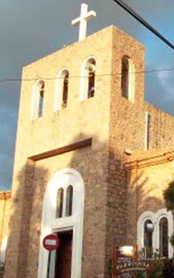
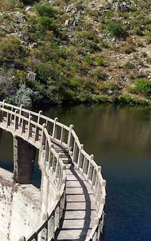

Calle Techada

Inaugurada en el año 1964, fue la primer calle techada. Es una cuadra donde podras encontrar negocios locales y restaurantes.
Parroquia
La Parroquia San Antonio de Padua es la capilla que da el nombre a la ciudad. los 13 de Junio se celebra su fiesta patronal.
Los Alazanes
El dique los Alazanes se encuentra a 11km del centro de Capilla del Monte, entre los cerros Uritorco y Las Gemelas. Para acceder al dique contas con 2 opciones: Caminata o Cabalgata.
Dique el Cajon

Inaugurado en 1993, es un dique que se encuentra frente a la ciudad de Capilla del Monte. Se encuentra a 4km de nuestro complejo y podés acceder caminando o en auto y es uno de los lugares que podes observar desde lo alto del complejo.